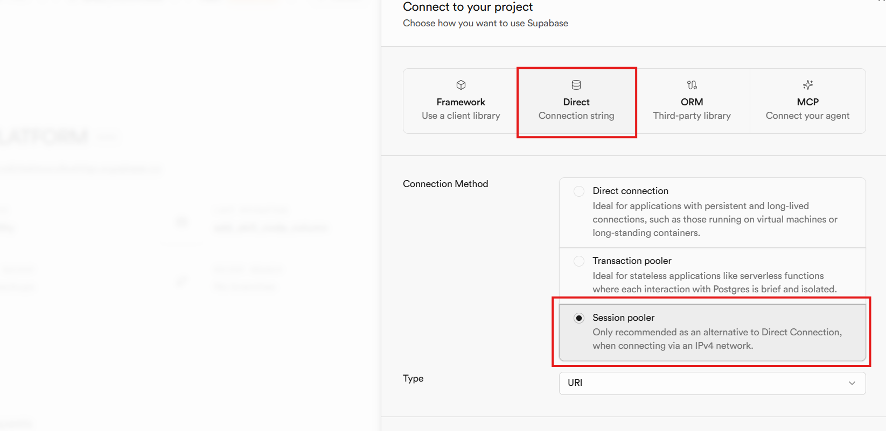
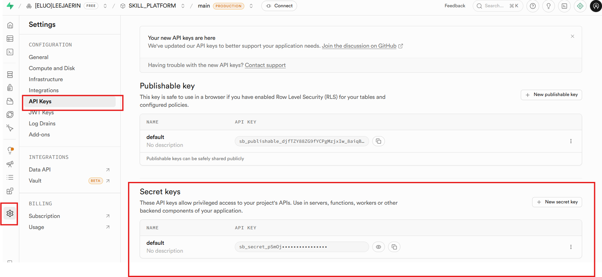
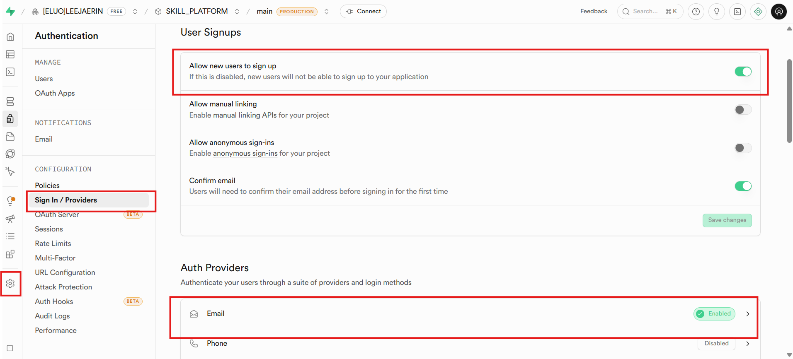
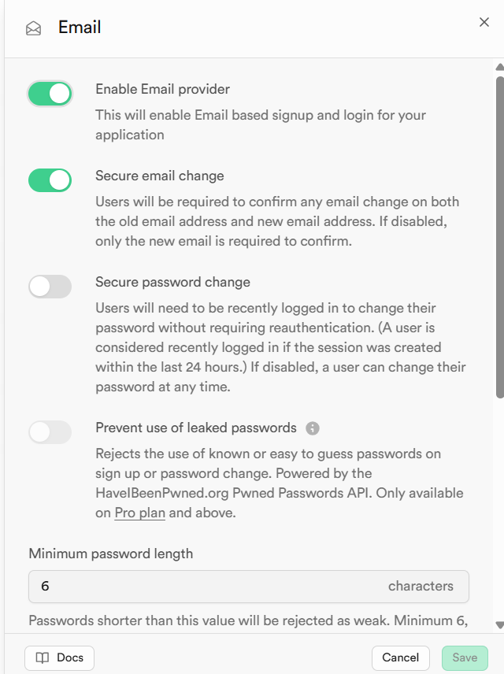
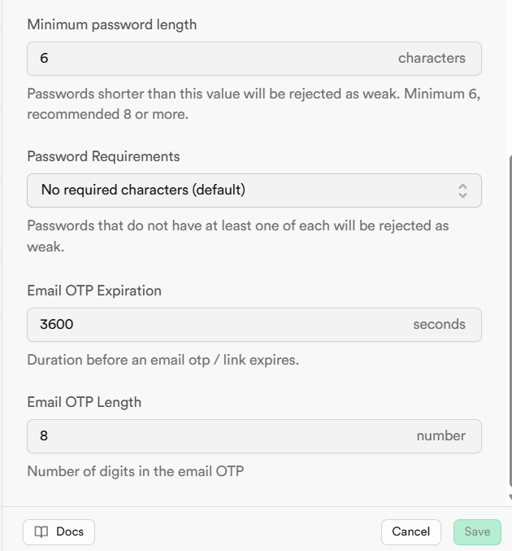
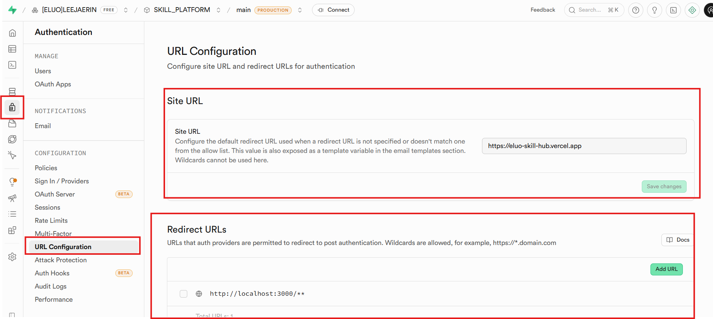
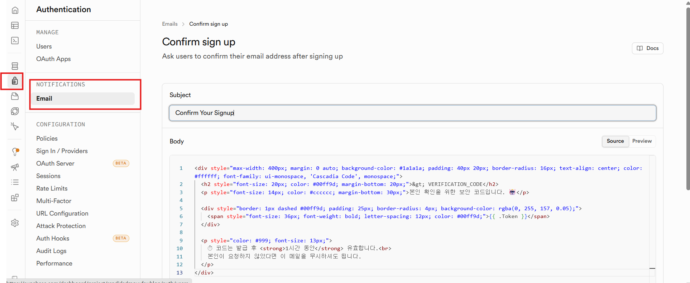
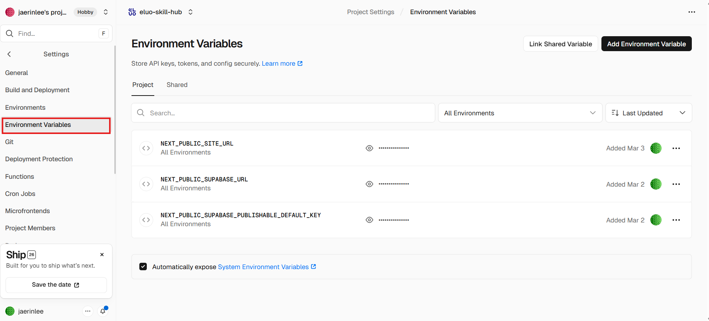

작성일: 2026-03-24 | 대상: GitHub 저장소 + Supabase 프로젝트 + Vercel 배포 전체 이전
eluo-skill-hub (또는 원하는 이름)Northeast Asia (Seoul) 권장프로젝트 생성 후 Connect to your project 화면에서 연결 정보를 확인합니다.
Direct Connection 탭에서 Session pooler를 선택하세요:

Session pooler 선택 후 표시되는 연결 정보를 메모합니다:

필요한 정보 3가지:
| 항목 | 예시 | 용도 |
|---|---|---|
| host | aws-1-ap-northeast-1.pooler.supabase.com | migrate.sh의 NEW_HOST |
| user | postgres.xxxxxxxxxxxx | migrate.sh의 NEW_USER |
| password | 프로젝트 생성 시 설정한 비밀번호 | migrate.sh의 NEW_PASSWORD |
또한 Settings → API에서 아래 키도 메모합니다:
| 항목 | 용도 |
|---|---|
| Project URL | .env.local의 NEXT_PUBLIC_SUPABASE_URL |
| anon public key | .env.local의 NEXT_PUBLIC_SUPABASE_PUBLISHABLE_DEFAULT_KEY |
| service_role key | migrate-storage.ts에서 사용 (코드에는 넣지 않음) |
migration-dump/ 디렉토리에 모든 스크립트가 준비되어 있습니다. 사용자는 변수 수정 후 실행만 하면 됩니다.
migration-dump/
├── migrate.sh ← 원클릭 실행 (스키마+함수+RLS+데이터 전부)
├── migrate-storage.ts ← Storage 파일 복사
├── 01_schema.sql ← 테이블 12개 + 시퀀스 + 인덱스 20개
├── 02_functions.sql ← 함수 14개 + 트리거 3개
├── 03_rls.sql ← RLS 정책 48개 + Storage 버킷 2개
├── 04_import_data.sql ← CSV 데이터 임포트 + 무결성 검증
├── images/ ← 가이드 이미지
└── *.csv (14개) ← 기존 DB에서 덤프한 데이터Claude Code에게 아래와 같이 요청하세요:
비밀번호 해시까지 완전히 이전되므로, 기존 사용자는 기존 비밀번호로 그대로 로그인할 수 있습니다.
기존/새 프로젝트 모두에서 Secret key (service_role)가 필요합니다.
Settings → API Keys → Secret keys에서 확인:

Claude Code에게 아래와 같이 요청하세요:
Supabase Dashboard → Authentication → Sign In / Providers에서 설정합니다.
Sign In / Providers 화면에서 아래 항목을 확인합니다:

Email Provider 상세 설정:

OTP 설정:

URL Configuration (Authentication → URL Configuration):

https://your-domain.com)http://localhost:3000/** 추가 (로컬 개발용), 프로덕션 도메인도 추가Authentication → NOTIFICATIONS → Email → Confirm sign up에서 OTP 인증 메일 템플릿을 설정합니다.

Confirm Your Signup<div style="max-width: 400px; margin: 0 auto; background-color: #1a1a1a; padding: 40px 20px; border-radius: 16px; text-align: center; color: #ffffff; font-family: ui-monospace, 'Cascadia Code', monospace;">
<h2 style="font-size: 20px; color: #00ff9d; margin-bottom: 20px;">> VERIFICATION_CODE</h2>
<p style="font-size: 14px; color: #cccccc; margin-bottom: 30px;">본인 확인을 위한 보안 코드입니다. 🤖</p>
<div style="border: 1px dashed #00ff9d; padding: 25px; border-radius: 4px; background-color: rgba(0, 255, 157, 0.05);">
<span style="font-size: 36px; font-weight: bold; letter-spacing: 12px; color: #00ff9d;">{{ .Token }}</span>
</div>
<p style="color: #999; font-size: 13px;">
⏱ 코드는 발급 후 <strong>1시간 동안</strong> 유효합니다.<br>
본인이 요청하지 않았다면 이 메일을 무시하셔도 됩니다.
</p>
</div>마이그레이션 스크립트(01_schema.sql ~ 03_rls.sql)에 모든 내용이 포함되어 있으므로 수동 실행할 필요는 없습니다. 아래는 참고용 요약입니다.
| 함수명 | 용도 |
|---|---|
is_admin(uuid) | 관리자 확인 (RLS 정책에서 사용) |
handle_new_user() | 이메일 인증 완료 시 profiles 자동 생성 (UPDATE 트리거) |
handle_updated_at() | skills 수정 시 updated_at 자동 갱신 |
generate_skill_code() | skills 생성 시 skill_code 자동 부여 (시퀀스 기반) |
check_email_exists(text) | 회원가입 시 이메일 중복 확인 |
increment_download_count(uuid) | 템플릿 다운로드 카운트 증가 |
get_analytics_overview(timestamptz, timestamptz) | 분석 개요 (활성 유저, 조회수, 다운로드) |
get_daily_trend(timestamptz, timestamptz) | 일별 트렌드 |
get_skill_rankings(timestamptz, timestamptz, int) | 스킬 랭킹 |
get_user_behavior(timestamptz, timestamptz) | 사용자 행동 분석 |
| 트리거 | 테이블 | 시점 | 함수 |
|---|---|---|---|
on_auth_user_email_confirmed | auth.users | AFTER UPDATE | handle_new_user() |
trg_generate_skill_code | skills | BEFORE INSERT | generate_skill_code() |
set_skills_updated_at | skills | BEFORE UPDATE | handle_updated_at() |
pnpm build (자동 감지됨).next (기본값)Vercel Dashboard → Settings → Environment Variables에서 아래 3개 변수를 추가합니다.

| 변수명 | 값 |
|---|---|
NEXT_PUBLIC_SITE_URL | 프로덕션 도메인 (예: https://eluo-skill-hub.vercel.app) |
NEXT_PUBLIC_SUPABASE_URL | 새 Supabase 프로젝트 URL |
NEXT_PUBLIC_SUPABASE_PUBLISHABLE_DEFAULT_KEY | 새 Supabase Publishable key |
현재 next.config.ts 설정:
{
images: { formats: ['image/avif', 'image/webp'] },
compress: true,
poweredByHeader: false,
}별도의 vercel.json은 없으며 Vercel 기본 설정을 사용합니다.
.env.local (로컬 개발 + Vercel)| 변수 | 설명 | 예시 |
|---|---|---|
NEXT_PUBLIC_SUPABASE_URL | Supabase 프로젝트 URL | https://xxxxx.supabase.co |
NEXT_PUBLIC_SUPABASE_PUBLISHABLE_DEFAULT_KEY | Supabase Anon (공개) Key | sb_publishable_xxxxx |
NEXT_PUBLIC_SITE_URL | 사이트 기본 URL | http://localhost:3000 (로컬) / https://도메인 (프로덕션) |
.env.test (테스트 전용)| 변수 | 설명 |
|---|---|
TEST_USER_EMAIL | E2E 테스트용 사용자 이메일 |
TEST_USER_PASSWORD | E2E 테스트용 사용자 비밀번호 |
.mcp.json (Claude Code MCP 연동)Supabase project ref를 새 프로젝트로 변경:
{
"mcpServers": {
"supabase": {
"type": "http",
"url": "https://mcp.supabase.com/mcp?project_ref=<새_프로젝트_ref>"
}
}
}# 1. 저장소 클론
git clone https://github.com/<새계정>/eluo-skill-hub.git
cd eluo-skill-hub
# 2. pnpm 설치 (없는 경우)
npm install -g pnpm
# 3. 의존성 설치
pnpm install
# 4. 환경 변수 설정
cp .env.local.example .env.local
# .env.local 파일에 새 Supabase 프로젝트 정보 입력
# 5. 개발 서버 실행
pnpm dev
# http://localhost:3000 접속데이터 마이그레이션 시 기존 관리자 계정이 그대로 이전됩니다. 새로 관리자를 추가해야 하는 경우:
UPDATE public.profiles
SET role_id = (SELECT id FROM public.roles WHERE name = 'admin')
WHERE email = '<관리자_이메일>';pnpm test # 전체 테스트 실행
pnpm test:watch # Watch 모드
pnpm test:coverage # 커버리지 리포트# 1. Playwright 브라우저 설치 (최초 1회)
npx playwright install
# 2. .env.test 파일에 테스트 계정 정보 설정
# 3. E2E 테스트 실행
pnpm test:e2e
# 4. 리포트 확인
npx playwright show-reportPlaywright는 로그인 상태를 .auth/user.json에 저장하여 재사용합니다.
| 문제 | 원인 | 해결 |
|---|---|---|
migrate.sh 연결 실패 | 호스트/유저/비밀번호 오류 | Session pooler 연결 정보 재확인 (1.2절 이미지 참고) |
pg_dump 버전 불일치 | 로컬 PostgreSQL 클라이언트가 낮은 버전 | migrate.sh는 psql의 \COPY를 사용하므로 해당 없음 |
Tenant or user not found | Transaction pooler(6543) 사용 또는 잘못된 리전 | Session pooler(5432) + 정확한 리전 호스트 확인 |
| IPv6 연결 실패 (WSL) | Direct Connection은 IPv6만 지원 | Session pooler 사용 (IPv4 지원) |
| 복원 시 중복 키 에러 | 이미 데이터가 존재 | 새 프로젝트에서 실행했는지 확인. 재실행 시 테이블 DROP 후 재시도 |
| 복원 후 로그인 실패 | auth.identities 누락 | auth_identities.csv가 정상 임포트 되었는지 확인 |
| profiles 중복 생성 | 트리거 비활성화 안 됨 | 04_import_data.sql이 자동으로 처리하므로 migrate.sh 통해 실행 |
| Storage 마이그레이션 실패 | service_role key 오류 | Dashboard → Settings → API에서 service_role (secret) 키 확인 |
| 문제 | 원인 | 해결 |
|---|---|---|
| ZIP 파일 업로드 실패 | Windows에서 MIME 타입 application/x-zip-compressed 전달 | 코드에서 Blob 변환으로 MIME 강제 지정 (이미 처리됨) |
| 회원가입 후 프로필 없음 | handle_new_user 트리거 미설정 | 02_functions.sql 트리거 생성 확인 |
| 관리자 페이지 접근 불가 | RLS 정책 또는 role 미설정 | is_admin 함수 + profiles.role_id 확인 |
| Storage 업로드 권한 에러 | Storage RLS 정책 미설정 | 03_rls.sql Storage 정책 확인 |
| 파일명 깨짐 | 한글 파일명 인코딩 | sanitizeStoragePath 함수가 비-ASCII 문자 제거 (이미 처리됨) |
any 타입 사용 절대 금지 (ESLint에서 에러 발생)feat: 새로운 기능 추가 fix: 버그 수정
docs: 문서 수정 style: 코드 스타일 수정
refactor: 코드 리팩토링 test: 테스트 코드 추가/수정
chore: 빌드/툴 변경 ci: CI/CD 관련 변경prefix는 영어, 설명은 한글로 작성
| event_name | properties |
|---|---|
auth.signin | { email } |
auth.signup | { email } |
auth.signout | {} |
skill.view | { skill_id } |
skill.bookmark_add | { skill_id } |
skill.bookmark_remove | { skill_id } |
skill.template_download | { skill_id, template_id } |
search.query | { query } |
search.tag | { tag } |
nav.sidebar_click | { tab } |
프로젝트는 도메인 중심 구조를 따릅니다:
domain/ - 타입 정의infrastructure/ - Supabase Repository 구현application/ - Use Case (비즈니스 로직)presentation/ - React 컴포넌트hooks/ - React Query 훅| 항목 | 값 |
|---|---|
| Project Ref | rcndirlsdmovufswhlqo |
| URL | https://rcndirlsdmovufswhlqo.supabase.co |
| Anon Key | sb_publishable_djfTZY88ZG9fYCPgMzjxIw_8aiqBRf7 |
| Session Pooler Host | aws-1-ap-northeast-1.pooler.supabase.com |
| Session Pooler User | postgres.rcndirlsdmovufswhlqo |
| Session Pooler Port | 5432 |
이전 완료 후 기존 프로젝트의 키는 반드시 교체하거나 프로젝트를 삭제하세요.